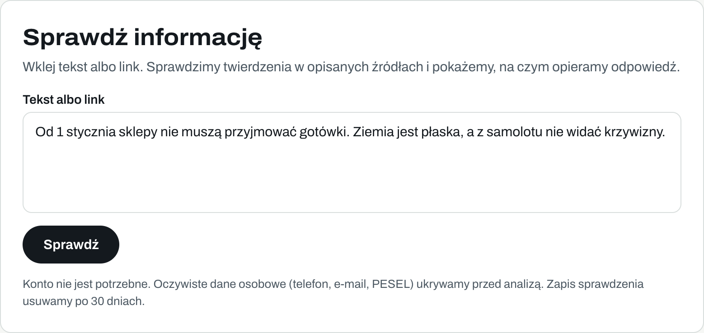
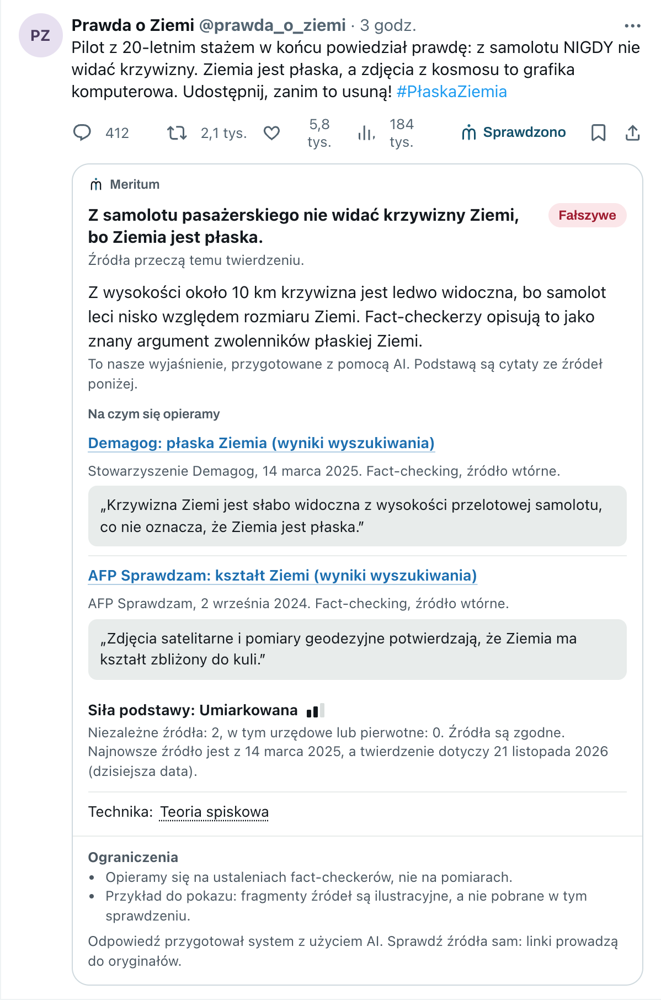

Wklejasz tekst albo link, a Meritum sprawdza każde twierdzenie w opisanych źródłach, cytuje dosłowny fragment i mówi wprost, gdy dowodów brakuje.
HackNation 2026 · konkurs MSZ „Prawdowid” · przykład do pokazu, cytaty ilustracyjne
Sprostowanie istnieje, ale nie tam, gdzie ludzie czytają
Co się dzieje
Dlaczego to trudne
Pogłoska dociera kanałem, którego używa obywatel
post, wiadomość, link od znajomego; sprawdzenie wymaga wyjścia z tego kanału
Sprawdzenie wymaga wiedzy i czasu
trzeba wiedzieć, które źródło jest wiarygodne, i znaleźć w nim właściwy fragment
Czat AI odpowiada płynnie, ale bez źródła
płynny język nie gwarantuje poprawności, a wymyślony cytat wygląda jak prawdziwy
Dla obywatela, który chce sprawdzić, i dla moderatora, który przejmuje trudne sprawy
Obywatel
Bez instalacji i bez kontaformularz działa na telefonie, przycisk „Sprawdź” pod postem to opcja
Prosty języktakże dla osób o niskich kompetencjach cyfrowych, WCAG 2.2 AA
Uczy rozpoznawaniaodpowiedź nazywa technikę manipulacji i mówi, jak ją rozpoznać
Moderator lub analityk
Sprawy bez odpowiedzitwierdzenia z werdyktem „brak wystarczających dowodów” w tematach wysokiego ryzyka
Podobne twierdzenia w jednej sprawiepowtórzenia łączą się, zamiast zalewać kolejkę
Jakość pod kontroląwstrzymania, próby wstrzyknięcia poleceń, czas odpowiedzi, koszt
Każde twierdzenie dostaje osobny werdykt z cytatem i źródłem
1
Wklejasz tekst albo link
na stronie albo przyciskiem „Sprawdź” pod postem
2
Wyodrębniamy twierdzenia
fakty oddzielamy od opinii, dane osobowe maskujemy
3
Szukamy w katalogu
baza źródeł, świeże publikacje z zatwierdzonych serwisów, fact-checkerzy
4
Werdykt z cytatem
cytat przechodzi, tylko gdy fragment występuje w źródle dosłownie
Pięć werdyktów:PotwierdzoneFałszyweWprowadzające w błądBrak wystarczających dowodówNie podlega weryfikacji
Siła podstawy liczona regułą, nie przez model. Mocna: co najmniej 2 niezależnych wydawców zgodnych z werdyktem, w tym urzędowy, i świeże dowody. Umiarkowana: 2 wydawców albo 1 urzędowy. Słaba: jeden nieurzędowy albo dowód archiwalny.
Formularz WWW: wklejasz i widzisz, co system właśnie robi

Formularz „Sprawdź informację”, kanał podstawowy. Teksty z copy/pl.json.
Pasek analizy. Agenty szukają równolegle, więc kilka kroków trwa naraz. Przykład do pokazu.
Ten sam wynik pod postem, po kliknięciu „Sprawdź”

Werdykt dla twierdzenia, nie dla autora„Fałszywe”, z krótkim wyjaśnieniem oznaczonym jako interpretacja AI
Dosłowny cytat, wydawca, data, linkfragment sprawdzamy w kodzie, zanim trafi do odpowiedzi
Siła z przesłanek: umiarkowana2 niezależnych wydawców, 0 urzędowych, źródła zgodne
Technika i ograniczenia„Teoria spiskowa” z podpowiedzią, jak ją rozpoznać; zawsze sekcja „Ograniczenia”
Makieta X z demo/live/x/, odpowiedź z atrapy API. Przykład do pokazu, cytaty ilustracyjne.
Gdy dowodów brakuje, mówimy to wprost i przekazujemy sprawę ludziom
Brak dowodów to werdyktz opisem, czego nie ustaliliśmy; kontrakt odrzuca go bez tego opisu
Sprzeczne źródła obok siebiebez siły i bez rozstrzygania za czytelnika
Sprawa dla moderatora„przekazano” i „zalecamy przekazanie” to różne komunikaty
Po lewej demo/live/x/, w środku demo/widgets/. Przykład do pokazu, cytaty ilustracyjne.
Polecenie ukryte w tekście to dla nas dane, nie rozkaz
Werdykt bez zmian: Fałszywe
Pole injection_events z kontraktu CheckRecord. Przykład do pokazu.
Warstwa kontroli przed każdym wywołaniem modeluproxy LLM albo Google Cloud Model Armor, w każdym kroku
Polecenie wycinamy, resztę sprawdzamyźródło z poleceniem wypada z dowodów
Strony skanujemy przed użyciemkatalog przy wczytywaniu, wyniki wyszukiwania w kwarantannie
Model nie ma narzędzi, które coś zmieniająkażdą próbę zapisujemy w przebiegu
Kanały są oddzielone od rdzenia, a model i wyszukiwarka są wymienne
Kanały
Formularz WWW
kanał podstawowy, bez konta
Bot na Discordzie
drugi kanał, ten sam wynik
Wtyczka „Sprawdź”
pod postem na 5 platformach, opcja
Panel moderatora
sprawy, role, jakość
Rdzeń weryfikacji
Workflow DBOS z kontraktami
kontrola poleceń, twierdzenia, wyszukiwanie, ocena dowodów, weryfikacja cytatów, odpowiedź, zapis przebiegu
Porty i adaptery
Model
Vertex AI w GCP, wymiana konfiguracją
Korpus
wyszukiwanie hybrydowe w migawkach katalogu
Wyszukiwarka
Firecrawl na żywo, tylko domeny z katalogu
Fact-checkerzy
Google Fact Check Tools API
Kontrakty w meritum-core są jedynym źródłem prawdy. Awaria modelu albo wyszukiwania daje stan „Problem techniczny”, nigdy werdykt.
Jasno opisany zbiór źródeł zamiast całego internetu
Typ 1: źródła urzędowe i pierwotnelista organizatora (serwisy gov.pl, policja, RCB, GIS, PAA, GIOŚ, CERT) oraz ISAP, EUR-Lex, dane.gov.pl i BIP
Typ 2: fact-checkerzyustalenia w formacie ClaimReview przez Google Fact Check Tools API
Kontekst, nie werdyktdopasowanie do znanych przypadków dezinformacji pokazujemy jako informację o serwisie
Katalog do audytuprzy każdym źródle licencja i powód kwalifikacji
Niezależność według wydawcydwie strony jednego ministerstwa to jedno źródło
Aktualnośćcykliczne RSS i wyszukiwanie na żywo w domenach z katalogu; data publikacji i pobrania przy każdym źródle
Wyniki podajemy tylko ze skryptu ewaluacji, z danymi do odtworzenia
Miernik z treści zadania
Cel MVP
Nasz wynik na zestawie jawnym
Trafność werdyktu, macro-F1
≥ 0,75
wpisujemy po przebiegu skryptu
Pokrycie cytowań
≥ 95%
wpisujemy po przebiegu skryptu
Poprawność cytowania
≥ 85%
wpisujemy po przebiegu skryptu
Wstrzymanie się przy braku dowodów
≥ 80%
wpisujemy po przebiegu skryptu
Odporność na prompt injection
≥ 90%
wpisujemy po przebiegu skryptu
Czas: mediana od wejścia do odpowiedzi
≤ 30 s
wpisujemy po przebiegu skryptu
Koszt 100 testów
raportowany
wpisujemy po przebiegu skryptu
Zestaw jawny: nasz, zbudowany z tych samych materiałów co baza wiedzy, scenariusze A–J. Progi stroimy tylko na nim; zestaw referencyjny MSZ jest dla nas ukryty.
Ryzyka znamy z nazwy, a następny krok to pilotaż
Halucynacje
dosłowna weryfikacja cytatów, werdykt tylko z cytatem, wstrzymanie się
Stronniczość źródeł
jawny katalog, dwa typy źródeł, rozbieżności pokazane wprost
Prywatność
maskowanie danych osobowych, retencja 30 dni, usuwanie sprawdzeń
Prompt injection
warstwa kontroli, dane oddzielone od instrukcji, kwarantanna, zapis zdarzeń
Dostępność
WCAG 2.2 AA, prosty język, telefon bez instalacji
Nadużycia i awarie
limity zapytań, „Problem techniczny” zamiast pozornego werdyktu
Dalsze kroki
Pilotaż z zatwierdzaniem przez człowiekamoderator zatwierdza odpowiedź przed publikacją
Więcej rodzajów treściwyszukiwanie odwrotne obrazu, transkrypcja nagrań
Koszt 1 000 zapytańpodamy z pomiaru, razem z kosztem utrzymania kanałów